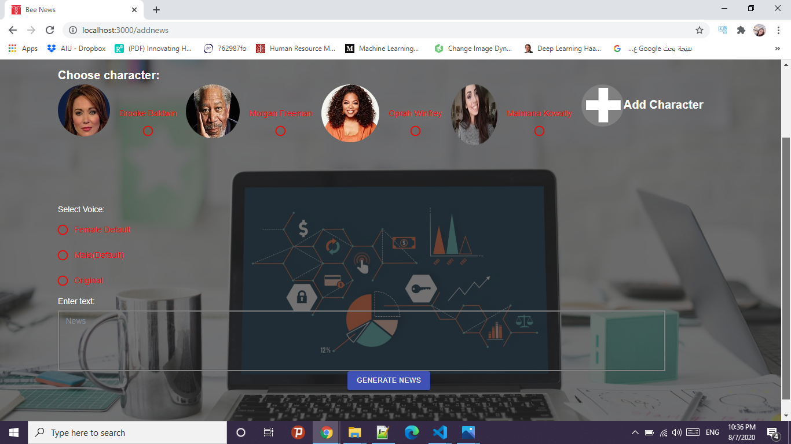

Project
Description

System screenshots


Definition
Talking faces generation aims to synthesize a sequence of face images and voices of character corresponding to their identities,it can serve several solutions such as Voice tone,facial expression with good lip synchronization.
I developed Bee News Website in order to implement the talking faces project as a tool for users in a news agency to post news as a text to be generated as a life like image and voice of the chosen anchor with high lip synchonization accuracy instead of filming real anchors.
Technologies used:
AI:
- google colab
- Pytorch
- python
- Tensorflow
Website:
- Backend:Node.Js,Flask
- Framework:Express.Js
- Frontend:React.JS
- Database:Mongo DB